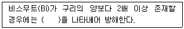
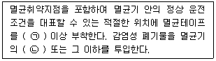
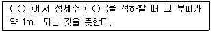
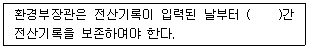
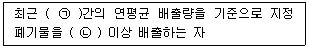
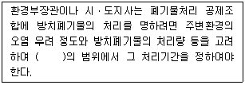

폐기물처리산업기사 (2018-03-04 기출문제)
1과목: 폐기물개론
1. 쓰레기 수집 시스템에 관한 설명으로 옳지 않은 것은?
- 모노레일 수송은 쓰레기를 적환장에서 최종처분장까지 수송하는데 적용할 수 있다.
- 콘베이어 수송은 지상에 설치한 콘베이어에 의해 수송하는 방법으로 신속 정확한 수송이 가능하나 악취와 경관에 문제가 있다.
- 콘테이너 철도수송은 광대한 지역에서 적용할 수 있는 방법이며 콘테이너의 세정에 많은 물이 요구되어 폐수처리의 문제가 발생한다.
- 관거를 이용한 수거는 자동화, 무공해화가 가능하나 조대쓰레기는 파쇄, 압축 등의 전처리가 필요하다.
(정답률: 87%)

2. 쓰레기 재활용의 장점에 관한 설명 중 틀린 것은?
- 자원 절약이 가능하다.
- 최종 처분할 쓰레기양이 감소된다.
- 쓰레기 종류에 관계없이 경제성이 있다.
- 2차 환경오염을 줄일 수 있다.
(정답률: 89%)
3. 쓰레기발생량예측방법과 가장 거리가 먼 것은?
- 경향법
- 계수분석모델
- 다중회귀모델
- 동적모사모델
(정답률: 83%)
4. 수분이 96%이고 무게 100kg인 폐수슬러지를 탈수시켜 수분이 70%인 폐수슬러지로 만들었다. 탈수된 후 폐수슬러지의 무게(kg)는? (단, 슬러지 비중 = 10)
- 11.3
- 13.3
- 16.3
- 18.3
(정답률: 78%)
5. 폐기물관리법 제도하에서 관리하는 폐기물은?
- 인분뇨
- 병원폐기물(적출물)
- 방사성 폐기물
- 가축분뇨
(정답률: 66%)
6. 함수율 85%인 슬러지 100m3과 함수율 40%인 1000m3의 슬러지를 혼합했을 때 함수율(%)은? (단, 모든 슬러지의 비중 = 1)
- 약 41.3
- 약 44.1
- 약 46.0
- 약 49.3
(정답률: 78%)
7. 국내에서 재활용율이 가장 낮은 것은?
- 유리병
- 고철
- 폐지
- 형광등
(정답률: 94%)
8. 파쇄에 관한 설명으로 틀린 것은?
- 파쇄를 통해 폐기물의 크기가 보다 균일해진다.
- 파쇄 후 폐기물의 부피는 감소할 수도, 증가할 수도 있다.
- 파쇄된 입자의 무게기준으로 63.2%가 통과할 수 있는 체의 눈의 크기를 평균특성입자라고 한다.
- Rosin-Rammler Model은 파쇄된 입자크기 분포에 대한 수식적 모델이다.
(정답률: 72%)
9. 수분이 적당히 있는 상태에서 플라스틱으로부터 종이를 선별할 수 있는 방법으로 가장 적절한 것은?
- 자력선별
- 정전기선별
- 와전류선별
- 광학선별
(정답률: 84%)
10. 쓰레기 성상분석을 위한 시료의 조정방법이 아닌 것은?
- 원추 4분법
- 단열계법
- 교호삽법
- 구획법
(정답률: 86%)
11. 다음의 쓰레기 성상분석 과정 중에서 일반적으로 가장 먼저 이루어지는 절차는?
- 분류
- 절단 및 분쇄
- 건조
- 화학적 조성 분석
(정답률: 75%)
12. 폐기물의 분쇄에 대한 이론이 아닌 것은?
- Nernst 이론
- Rittinger 이론
- Kick 이론
- Bond 이론
(정답률: 69%)
13. 분리수거의 장점으로 적합하지 않은 사항은?
- 지하수 및 토양오염은 불가피하다.
- 폐기물의 자원화가 이루어진다.
- 최종 처분장의 면적이 줄어든다.
- 쓰레기 처리의 효율성이 증대된다.
(정답률: 89%)
14. 국내에서 실시하고 있는 쓰레기 종량제에 대한 개념을 설명한 것으로 틀린 것은?
- 쓰레기 배출량에 따라 수거처리 비용을 부담하는 원인자 부담원칙을 적용하는 제도
- 가정생활 쓰레기 및 상가, 시장, 업소, 사업장에서 발생하는 대형 쓰레기도 적용대상이다.
- 재활용품, 연탄재쓰레기 등은 종량제 대상에서 제외된다.
- 관급 규격봉투에 쓰레기를 담아 배출하여야 한다.
(정답률: 84%)
15. 쓰레기 성상분석에 대한 올바른 설명은?
- 쓰레기 채취는 신속하게 작업하되 축소작업 개피부터 60분 이내에 완료해야 된다.
- 수집운반차로부터 시료를 채취하되 무작위 채취방식으로 하고 수거차마다 배출지역이 다를 경우 층별채취법은 바람직하지 않다.
- 1대의 차량으로부터 대표되는 시료를 10 kg이상 채취하고 원시료의 총량을 200 kg이하가 되도록 한다.
- 쓰레기 성상조사는 적어도 1년에 4회 측정하되 수분의 평균치를 알기 위해서 비오는 날 수집은 피하는 것이 바람직하다.
(정답률: 71%)
16. 폐기물의 초기함수율이 65%이고, 건조시킨 후의 함수율이 45%로 감소되었다면 증발된 물의 양(kg)은? (단, 초기폐기물의 무게 = 100kg, 폐기물의 비중 = 1)
- 약 31.2
- 약 32.6
- 약 34.5
- 약 36.4
(정답률: 63%)
17. 폐기물 발생량에 영향을 미치는 인자로 가장 거리가 먼 것은?
- 가구당 인원수
- 생활수준
- 쓰레기통의 크기
- 처리방법
(정답률: 83%)
18. 우리나라에서 효율적이 쓰레기의 수거노선을 결정하기 위한 방법으로 적당한 것은?
- 가능한 U자형 회전을 하여 수거한다.
- 급경사지역은 하단에서 상단으로 이동하면서 수거한다.
- 가능한 한 시계방향으로 수거노선을 정한다.
- 쓰레기 수거는 소량 발생지역부터 실시한다.
(정답률: 81%)
19. 열분해에 의한 에너지회수법과 소각에 의한 에너지회수법을 비교하였을 때 열분해에 의한 에너지회수법의 장점이 아닌 것은?
- 저장 및 수송이 가능한 연료를 회수할 수 있다.
- NOx의 발생량이 적다.
- 감량비가 크며, 잔사가 안정화된다.
- 발생되는 배출가스량이 적어 가스처리장치가 소형이어도 된다.
(정답률: 58%)
20. 불완전 연소를 가정하여 O의 반은 H2O로, 남은 반은 CO의 형태로 있는 것으로 가정하여 발열량을 구하는 식은?
- Dulong
- Steuer
- Scheuer-Kester
- Kunle
(정답률: 62%)
2과목: 폐기물처리기술
21. 함수율 98%인 슬러지를 농축하여 함수율 92%로 하였다면 슬러지의 부피 변화율은? (단, 비중 = 1.0)
- 1/2로 감소
- 1/3로 감소
- 1/4로 감소
- 1/5로 감소
(정답률: 86%)
22. 폐기물 고형화처리의 목적으로 가장 거리가 먼 내용은?
- 폐기물의 독성이 감소한다.
- 폐기물의 취급을 용이하게 한다.
- 폐기물내 오염물질의 용해도가 감소한다.
- 폐기물의 부피를 감소시켜 매립용적을 감소시킨다.
(정답률: 70%)
23. 분뇨처리장에서 악취의 원인이 되는 가스가 아닌 것은?
- NH3
- H2S
- CO2
- 메르캅탄
(정답률: 79%)
24. 다음 조건과 같은 매립지내 침출수가 차수층을 통과하는데 소요되는 시간(년)은? (단, 점토층 두께 = 1.0m, 유효공극률 = 0.2, 투수계수 = 10-7cm/sec, 상부침출수 수두 = 0.4m)
- 약 7.83
- 약 6.53
- 약 5.33
- 약 4.53
(정답률: 50%)
25. 토양의 양이온 교환능력은 침출수가 누출될 경우 오염물질의 이동에 영향을 미친다. 침출수의 pH가 높아지면 토양의 양이온 교환능력의 변화는?
- 낮아진다.
- 변화없다.
- 높아진다.
- 알 수 없다.
(정답률: 61%)
26. 물리학적으로 분류된 토양수분인 흡습수에 관한 내용으로 틀린 것은?
- 중력수 외부에 표면장력과 중력이 평형을 유지하며 존재하는 물을 말한다.
- 흡습수는 pF 4.5 이상으로 강하게 흡착되어 있다.
- 식물이 직접 이용할 수 없다.
- 부식토에서의 흡습수의 양은 무게비로 70%에 달한다.
(정답률: 47%)
27. 폐기물 소각 시 발생되는 황산화물 처리법 중 건식법인 것은?
- 암모니아법
- 아황산칼륨법
- 석회흡수법
- 접촉산화법
(정답률: 66%)
28. 분뇨의 혐기성 소화처리방식의 장점이 아닌 것은?
- 소화가스를 열원으로 이용
- 병원균이나 기생충란 사멸
- 호기성 처리방법에 비해 유지관리비가 적음
- 호기성 처리방법에 비해 소화속도 빠름
(정답률: 78%)
29. 다음 중 지정폐기물의 최종처리시설로 가장 적합한 것은?
- 소각시설
- 해양투기
- 위생형 매립시설
- 차단형 매립시설
(정답률: 74%)
30. 쓰레기의 퇴비화를 고려할 때 가장 적당한 탄소와 질소의 비(C/N)는?
- 70 ~ 80
- 35 ~ 50
- 15 ~ 25
- 10 ~ 15
(정답률: 68%)
31. 도시 분뇨 농도는 TS가 6%이고, TS의 65%가 VS이다. 이 분뇨를 혐기성 소화처리한다면 분뇨 10m3당 발생하는 CH4가스의 양(m3)은? (단, 비중 = 1.0, 분뇨의 VS 1kg당 0.4m3의 CH4가스 발생)
- 122
- 131
- 142
- 156
(정답률: 59%)
32. 일반적으로 탈수에 이용되지 않는 방법은?
- 부상분리
- 진공여과
- 원심분리
- 가압여과
(정답률: 60%)
33. 투입분뇨의 토사, 협잡물 등을 분리시키기 위하여 설치하는 것은?
- 토사트랩(sand trap)
- 파쇄기
- Sand 펌프
- Basket형 운반장치
(정답률: 87%)
34. 토양 중에서 액체의 밀도가 2배 증가하면 투수계수(K)는?
- 처음의 1/2로 된다.
- 변함없다.
- 2배 증가한다.
- 4배 증가한다.
(정답률: 70%)
35. 매립장의 연평균 강우량이 1200mm이고, 매립장 면적이 30000m2이다. 합리식으로 계산하였을 때 일평균침출수 발생량(m3/일)은? (단, 침출계수(유출계수) = 0.4 적용)
- 약 40
- 약 72
- 약 100
- 약 144
(정답률: 44%)
36. 기계식 퇴비공법의 장점이 아닌 것은?
- 안정된 퇴비가 생성된다.
- 기후의 영향을 받지 않는다.
- 악취통제가 쉽다.
- 좁은 공간을 활용할 수 있다.
(정답률: 47%)
37. 폐기물 소각방법 중 다단로상식 소각로의 장점이 아닌 것은?
- 분진발생율이 낮다.
- 다양한 질의 폐기물에 대하여 혼소가 가능하다.
- 체류시간이 길어서 연소효율이 높다.
- 다량의 수분이 증발되므로 다습 폐기물의 처리에 유효하다.
(정답률: 56%)
38. 슬러지를 비료로 이용하고자 한다. 이에 대한 설명으로 옳지 않은 것은?
- 분뇨 및 도시하수처리장에서 생성되는 슬러지는 일반적으로 유기물이 많고 식물에 유해한 성분이 적으므로 토양개량제로 이용에 지장이 없다.
- 산업폐수처리에서 발생한 슬러지는 발생원칙에 따라 사전에 충분한 조사를 필요로 한다.
- 슬러지의 비료가치를 판단하는데 있어서 증식이 되는 영양소(N, P2O5, K2O)만을 중시하는 것은 오히려 불균형한 토양조성이 될 수 있다.
- 슬러지는 영양소가 충분하고 유해물질이 없어 식물에 대한 재배 실험이 필요하지 않다.
(정답률: 72%)
39. 퇴비화 공정설계 및 조작인자에 관한 설명으로 틀린 것은?
- 함수율은 50~70% 정도이다.
- 포기혼합, 온도조절 등이 필요하다.
- 수분함량에 관계없이 bulking agent를 주입해야 한다.
- 유기물이 가장 빠른 속도로 분해하는 온도범위는 60~80℃이다.
(정답률: 69%)
40. 폐기물 소각의 가장 주된 목적은?
- 부피감소
- 위생처리
- 고도처리
- 폐열회수
(정답률: 76%)
3과목: 폐기물 공정시험 기준(방법)
41. 시료 채취에 관한 설명으로 옳지 않은 것은?
- 5톤 미만의 차량에 적재되어 있는 폐기물은 평면상에서 9등분한 수 각 등분마다 채취한다.
- 시료의 양은 1회에 100g 이상 채취한다.
- 액산혼합물의 경우 원칙적으로 최종 지점의 낙하구에서 흐르는 도중에 채취한다.
- 고상혼합물의 경우 한 번에 일정량씩 채취한다.
(정답률: 81%)
42. 자외선/가시선분광법으로 구리를 분석할 때의 간섭물질에 관한 설명으로 ( )에 알맞은 것은?

- 적자색
- 황색
- 청색
- 황갈색
(정답률: 58%)
43. 유도결합플라즈마-원자발광분광법을 분석에 사용하지 않는 측정 항목은?
- 납
- 비소
- 수은
- 6가크롬
(정답률: 76%)
44. 폐기물 용출시험방법 중 시료용액 조제 시 용매의 pH 범위로 가장 옳은 것은?
- pH 4.3~5.5
- pH 5.2~5.8
- pH 5.8~6.3
- pH 6.3~7.2
(정답률: 78%)
45. 원자흡수분광광도법에 의한 카드뮴 정량 시 가장 오차를 크게 유발하는 물질은?
- NaCl
- Pb(OH)2
- FeSO4
- KMnO4
(정답률: 56%)
46. 십억분율(Parts Per Billion)을 올바르게 표시한 것은?
- ng/kg
- mg/kg
- μg/L
- ppm
(정답률: 70%)
47. 유기물 함량이 비교적 높지 않고 금속의 수산화물, 산화물, 인산염 및 화합물을 함유하고 있는 시료에 적용되는 산분해법은?
- 질산-황산 분해법
- 질산-염산 분해법
- 질산-과염소산 분해법
- 질산-불화수소산 분해법
(정답률: 67%)
48. 폐기물의 유분 분석 과정에서 추출된 노말헥산 층에 무수황산나트륨을 넣은 이유는?
- 분해율 향상
- 추출율 향상
- 수분제거
- 유기물 산화
(정답률: 70%)
49. 감염성미생물(멸균테이프 검사법) 분석 시 분석절차에 관한 설명으로 ( )에 옳은 것은?

- ㉠ 3개, ㉡ 최소 부하량
- ㉠ 5개, ㉡ 허용 부하량
- ㉠ 7개, ㉡ 최소 부하량
- ㉠ 10개, ㉡ 허용 부하량
(정답률: 48%)
50. 원자흡수분광광도계의 광원으로 주로 사용되는 램프는?
- 속빈음극램프
- 열음극램프
- 방전램프
- 텅스텐램프
(정답률: 61%)
51. 용출용액 중에 PCBs 분석(기체크로마토그래피법)에 관한 내용으로 틀린 것은?
- 용출용액 중의 PCBs를 헥산으로 추출한다.
- 액상 폐기물의 정량한계는 0.00⑤mg/L이다.
- 전자포획 검출기를 사용한다.
- 검출기의 온도는 270~320℃ 범위이다.
(정답률: 66%)
52. 방울수에 대한 설명으로 ( )에 옳은 것은?

- ㉠ 15℃, ㉡ 10방울
- ㉠ 15℃, ㉡ 20방울
- ㉠ 20℃, ㉡ 10방울
- ㉠ 20℃, ㉡ 20방울
(정답률: 81%)
53. 유기질소 화합물 및 유기인 화합물을 선택적으로 검출할 수 있는 기체크로마토그래피의 검출기는?
- 알칼리열 이온화 검출기
- 열전도도 검출기
- 수소염이온화 검출기
- 염광광도형 검출기
(정답률: 46%)
54. 고형물의 함량이 50%, 수분함량이 50%, 강열감량이 85%인 폐기물이 있다. 이 때 폐기물의 고형물 중 유기물 함량(%)은?
- 50
- 60
- 70
- 80
(정답률: 58%)
55. 취급 또는 저장하는 동안에 밖으로부터의 공기 또는 다른 가스가 침입하지 아니하도록 내용물을 보호하는 용기는?
- 기밀용기
- 밀폐용기
- 밀봉용기
- 차광용기
(정답률: 70%)
56. 시안을 이온전극으로 측정하고자 할 때 조절하여야 할 시료의 pH범위는?
- pH 3~4
- pH 6~7
- pH 10~12
- pH 12~13
(정답률: 73%)
57. 20ppm은 몇 %인가?
- 0.2%
- 0.02%
- 0.002%
- 0.0002%
(정답률: 64%)
58. 강도 I0의 단색광이 적색액을 통과할 때 그 빛의 80%가 흡수되었다면 흡광도는?
- 0.823
- 0.768
- 0.699
- 0.597
(정답률: 69%)
59. 중금속 원소 중 시료에 이염화주석을 넣고 금속원소로 환원시킨 다음 용액에 통기하여 발생되는 원자증기를 원자흡수분광광도법으로 정량하는 것은?
- 카드뮴
- 수은
- 납
- 아연
(정답률: 65%)
60. 2N 황산용액을 만들고자 할 때 가장 적절한 방법은? (단, 황산은 95% 이상)
- 물 1L 중에 황산 49mL를 가한다.
- 물에 황산 60mL를 가하고, 최종액량을 1L로 한다.
- 황산 60mL를 물 1L 중에 섞으면서 천천히 넣어 식힌다.
- 물에 황산 30mL를 가하고, 최종액량을 1L로 한다.
(정답률: 60%)
4과목: 폐기물 관계 법규
61. 폐기물 인계ㆍ인수 내용 등의 전산처리에 관한 내용으로 ( )에 알맞은 것은?

- 1년
- 3년
- 5년
- 10년
(정답률: 81%)
62. 폐기물관리법상 재활용으로 인정되는 에너지 회수기준으로 적합하지 않은 것은?
- 다른 물질과 혼합하지 아니하고 해당 폐기물의 고위발열량이 킬로그램당 1천 킬로칼로리 이상일 것
- 에너지의 회수효율(회수에너지 총량을 투입에너지 총량으로 나눈 비율을 말한다)이 75퍼센트 이상일 것
- 환경부장관이 정하여 고시한 경우에는 폐기물의 30% 이상을 원료나 재료로 재활용하고 그 나머지 중에서 에너지의 회수에 이용할 것
- 회수열을 모두 열원으로 스스로 이용하거나 다른 사람에게 공급할 것
(정답률: 76%)
63. 폐기물관리법의 제정 목적이 아닌 것은?
- 폐기물 발생을 최대한 억제
- 발생한 폐기물을 친환경적으로 처리
- 환경보전과 국민생활의 질적 향상에 이바지
- 발생 폐기물의 신속한 수거ㆍ이송처리
(정답률: 71%)
64. 환경정책기본법에 따른 용어의 정의로 옳지 않은 것은?
- “환경용량”이란 일정한 지역에서 환경오염 또는 환경 훼손에 대하여 환경이 스스로 수용, 정화 및 복원하여 환경의 질을 유지할 수 있는 한계를 말한다.
- “생활환경”이란 지상의 모든 생물과 이들을 둘러싸고 있는 비생물적인 것을 포함한 자연의 상태를 말한다.
- “환경훼손”이란 야생동식물의 남획 및 그 서식지의 파괴, 생태계질서의 교란, 자연경관의 훼손, 표토의 유실 등으로 자연환경의 본래적 기능에 중대한 손상을 주는 상태를 말한다.
- “환경보전”이란 환경오염 및 환경훼손으로부터 환경을 보호하고 오염되거나 훼손된 화경을 개선함과 동시에 쾌적한 환경 상태를 유지ㆍ조성하기 위한 행위를 말한다.
(정답률: 80%)
65. 폐기물처리시설의 설치자는 해당 시설의 사용개시일 며칠 전까지 사용개시신고서를 시ㆍ도지사나 지방환경관서의 장에게 제출하여야 하는가?
- 5일 전까지
- 10일 전까지
- 15일 전까지
- 20일 전까지
(정답률: 35%)
66. 폐기물관리법 벌칙 중 3년 이하의 징역 또는 3천만원 이하의 벌금에 처할 수 있는 경우에 해당하지 않는 것은?
- 사후관리(매립시설)를 적합하게 하도록 한 시정명령을 이행하지 아니한 자
- 영업정지 기간 중에 영업을 한 자
- 검사를 받지 아니하거나 적합 판정을 받지 아니하고 폐기물처리시설을 사용한 자
- 업종 구분과 영업 내용의 범위를 벗어나는 영업을 한 자
(정답률: 60%)
67. 폐기물처리시설(매립시설인 경우)을 폐쇄하고자 하는 자는 당해 시설의 폐쇄예정일 몇 개월 이전에 폐쇄신고서를 제출하여야 하는가?
- 1개월
- 2개월
- 3개월
- 4개월
(정답률: 58%)
68. 폐기물처리시설별 정기검사 시기가 틀린 것은? (단, 최초 정기검사임)
- 소각시설 : 사용개시일부터 2년
- 매립시설 : 사용개시일부터 1년
- 멸균분쇄시설 : 사용개시일부터 3개월
- 음식물류 폐기물 처리시설 : 사용개시일부터 1년
(정답률: 67%)
69. 기술관리인을 임명하지 아니하고 기술관리 대행 계약을 체결하지 아니한 자에 대한 과태료 처분 기준은?
- 2백만원 이하의 과태료
- 3백만원 이하의 과태료
- 5백만원 이하의 과태료
- 1천만원 이하의 과태료
(정답률: 75%)
70. 폐기물 처리시설의 중간처리시설 중 소각시설에 해당 되지 않는 것은?
- 열 분해시설(가스화시설을 포함한다.)
- 탈수ㆍ건조 시설
- 일반 소각시설
- 고온 소각시설
(정답률: 80%)
71. 주변지역 영향 조사대상 폐기물처리시설에 해당하는 것은?
- 1일 처리능력 30톤인 사업장폐기물 소각시설
- 1일 처리능력 15톤인 사업장폐기물 소각시설이 사업장 부지내에 3개 있는 경우
- 매립면적 1만5천 제곱미터인 사업장 지정폐기물 매립시설
- 매립면적 11만 제곱미터인 사업장 일반폐기물 매립시설
(정답률: 75%)
72. 에너지회수기준을 측정하는 기관으로 가장 거리가 먼 것은? (단, 국가표준기본법에 따라 환경부 장관이 지정하는 시험ㆍ검사기관은 고려하지 않음)
- 한국화학시험연구원
- 한국에너지기술연구원
- 한국환경공단
- 한국산업기술시험원
(정답률: 66%)
73. 관리형 매립시설에서 발생되는 침출수내 오염물질의 배출허용기준이 청정지역기준으로 불검출인 오염물질은? (단, 단위 mg/L)
- 수은
- 시안
- 카드뮴
- 납
(정답률: 63%)
74. 폐기물발생억제지침 준수의무대상 배출자의 규모기준으로 옳은 것은?

- ㉠ 2년, ㉡ 100톤
- ㉠ 2년, ㉡ 200톤
- ㉠ 3년, ㉡ 100톤
- ㉠ 3년, ㉡ 200톤
(정답률: 70%)
75. 폐기물처리업에 종사하는 기술요원이 환경부령이 정하는 교육기관에서 실시하는 교육을 받지 아니하였을 경우, 처벌기준은?
- 100만원 이하의 과태료
- 200만원 이하의 과태료
- 300만원 이하의 과태료
- 500만원 이하의 과태료
(정답률: 63%)
76. 방치폐기물의 처리기간에 관한 내용으로 ( )에 옳은 것은? (단, 연장 기간 제외)

- 1개월
- 2개월
- 3개월
- 6개월
(정답률: 67%)
77. 폐기물처리업의 변경허가를 받아야 하는 중요사항과 가장 거리가 먼 것은? (단, 폐기물 수집ㆍ운반업의 경우)
- 상호의 변경
- 운반차량(임시차량은 제외한다)의 증차
- 영업구역의 변경
- 주차장 소재지의 변경(지정폐기물을 대상으로 하는 수집ㆍ운반업만 해당한다.)
(정답률: 58%)
78. 폐기물 처분시설 또는 재활용시설 중 의료폐기물을 대상으로 하는 시설의 기술관리인 자격기준에 해당하지 않는 자격은?
- 수질환경산업기사
- 폐기물처리산업기사
- 임상병리사
- 위생사
(정답률: 70%)
79. 폐기물발생억제지침 준수의무대상 배출자의 업종이 아닌 것은?
- 자동차 및 트레일러 제조업
- 1차 금속 제조업
- 의료, 정밀, 광학기기 및 시계 제조업
- 봉제의복제품 제조업
(정답률: 80%)
80. 매립시설의 침출수를 측정하는 기관으로 틀린 것은?
- 한국환경공단
- 국립환경과학원
- 수도권매립지관리공사
- 수질오염물질 측정대행업의 등록을 한 자
(정답률: 68%)